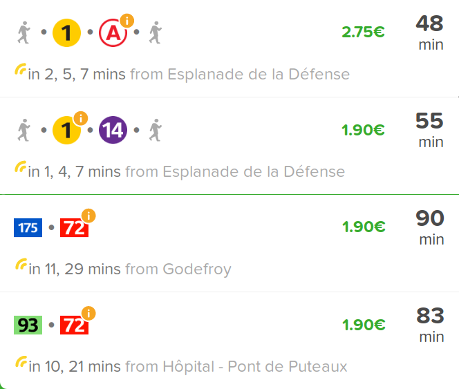
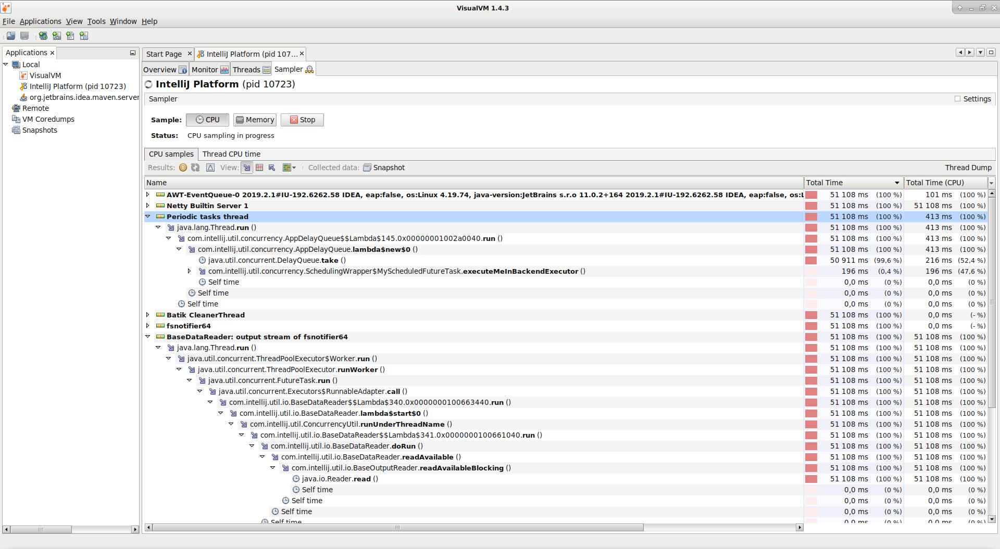
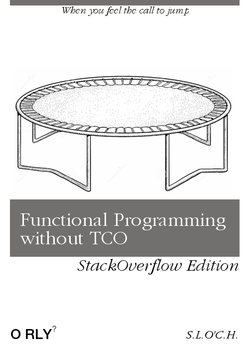
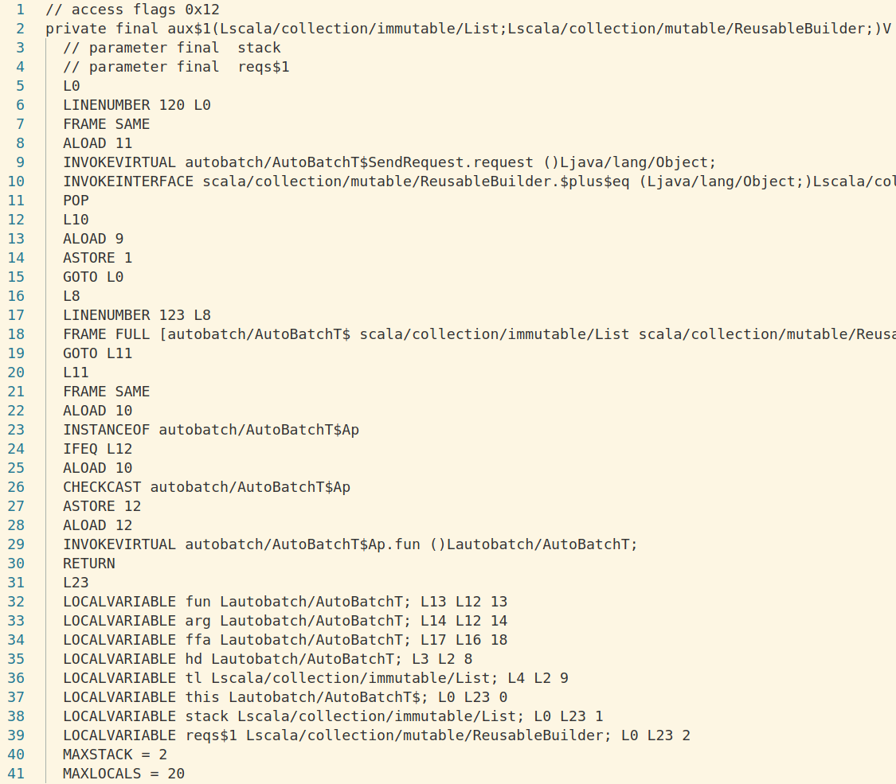

<!doctype html>
<html lang="en">
    <head>
        <meta charset="utf-8">
        <title>reveal-md</title>
        <link rel="stylesheet" href="./css/reveal.css">
        <link rel="stylesheet" href="./css/theme/black.css" id="theme">
        <link rel="stylesheet" href="./css/highlight/zenburn.css">
        <link rel="stylesheet" href="./css/print/paper.css" type="text/css" media="print">

    </head>
    <body>

        <div class="reveal">
            <div class="slides"><section ><section data-markdown><script type="text/template"><!--
- title : 10 tips to write Fast Stack-safe Functional code in Scala. The Automatic-Batching library experience report
- description :
- author : Christophe Calvès
- theme : league
- transition : convex
- slideNumber : true -->

<style type="text/css">
  .reveal li code { font-size:  100%; width : 600pt; }
  ul { text-align: left; }
</style>

# 10 tips to write Fast Stack-safe Functional code in Scala
## The Automatic-Batching library experience report

*Christophe Calvès* [@chrilves](http://twitter.com/chrilves) / [MFG Labs](http://mfglabs.com)

https://github.com/chrilves/slides/auto_batch
</script></section><section data-markdown><script type="text/template">
## Le Contexte: La Logistique

<video width="90%" src="../assets/common/lehavre.mp4" autoplay loop="true" playsinline controls muted></video>
</script></section></section><section ><section data-markdown><script type="text/template">
## Le Probleme



</script></section><section data-markdown><script type="text/template">
### Le Domaine


- **Un tronçon =**
  - Une ligne de Métro, Bus, Tram, etc.
  - Un arrêt de départ.
  - Un arrêt d'arrivée.
- **Un voyage =**
  - Une liste de tronçons.
</script></section><section data-markdown><script type="text/template">
# API que l'on aimerait ❤

Une fonction qui renvoie si un tronçon est perturbé.

```scala
def perturbé(troncon: Troncon): IO[Boolean]
```

Code métier:

```scala
final case class Troncon(ligne: Ligne, depart: Arret, arrive: Arret)

type Voyage                = List[ Troncon ]
type VoyageEtPerturbations = List[(Troncon, Boolean)]

val ajouterPertubations(vs: List[Voyage]): IO[List[VoyageEtPerturbations]] =
  vs.traverse { voyage =>
    voyage.traverse { troncon =>
      perturbé(troncon).map { perturbationBooleen =>
        troncon -> perturbationBooleen
      }
    }
  }
```
</script></section><section data-markdown><script type="text/template">
# API que l'on a 💔

Une fonction qui renvoie la liste des arrêts perturbés d'une ligne de métro, bus, etc.

```scala
def arretsPerturbés(lignes: List[Ligne]): List[(Ligne, List[Arret])]
```
</script></section><section data-markdown><script type="text/template">
### Avantages / Inconvénients

```scala
def perturbé(troncon: Troncon): IO[Boolean]
```

vs

```scala
def arretsPerturbés(lignes: List[Ligne]): List[(Ligne, List[Arret])]
```
</script></section><section data-markdown><script type="text/template">
### J'aime pas choisir!


```scala
def arretsPerturbés(lignes: List[Ligne]): List[(Ligne, List[Arret])]
```

**et**

```scala
def perturbé(troncon: Troncon): AutoBatchT[IO, Boolean]

def run[A](code: AutoBatchT[IO, A]): IO[A]
```

Principe:

- Dans le code métier, on utilise la méthode `perturbé`.
- La méthode `run` collecte les appels unitaire
- Puis elle appelle `arretsPerturbés` en batch avec ces requêtes
- Une fois les réponses obtenues, elle remplace chaque appel à `perturbé` par la réponse correspondante.
- Répète l'opération jusqu'à complétion du calcul.
</script></section><section data-markdown><script type="text/template">
### Écrivez vos propres Abstractions Dédiées

```scala
def sendRequest(request: Req): AutoBatch[Resp]

def pure[A](a: A): AutoBatch[A]

def ap[A, B](     ff: AutoBatch[A => B])(fa: AutoBatch[A]): AutoBatch[B]
def map[A, B](    fa: AutoBatch[A])(f:  A =>           B ): AutoBatch[B]
def flatMap[A, B](fa: AutoBatch[A])(f:  A => AutoBatch[B]): AutoBatch[B]

def flat[A](value: AutoBatch[AutoBatch[A]]): AutoBatch[A]
```

```scala
sealed trait AutoBatchT[A]

private case class Pure[A](value: A   ) extends AutoBatchT[A]
private case class Lift[A](value: F[A]) extends AutoBatchT[A]

private case class Ap[A, B](fun: AutoBatchT[A => B],arg: AutoBatchT[A])
  extends AutoBatchT[B]

private case class Flatten[A](value: AutoBatchT[AutoBatchT[A]])
  extends AutoBatchT[A]

private case class SendRequest(request: Req) extends AutoBatchT[Resp]
```
</script></section><section data-markdown><script type="text/template">
### Astuce: Smart Constructors!


```scala
@inline def ap[A, B](ff: AutoBatchT[A => B])(fa: AutoBatchT[A]): AutoBatchT[B] =
  (ff, fa) match {
    case (Pure(f), Pure(a)) => Pure(f(a))
    case (_      , _      ) => Ap(ff, fa)
  }
```
</script></section></section><section ><section data-markdown><script type="text/template">
## Livré en Prod! C'est la fête!


</script></section><section data-markdown><script type="text/template">
# Profilage


</script></section><section data-markdown><script type="text/template">
# VisualVM


</script></section></section><section ><section data-markdown><script type="text/template">
# Enfin tout fonctionne! On est sauvé!

> "Monads in Scala are forced to be either slow via trampolining or they don't scale."<br/>__Edward Kmett__ on [Reddit](https://www.reddit.com/r/scala/comments/1tijwv/a_review_by_edward_kmett_of_functional/)
</script></section><section data-markdown><script type="text/template">

### The Big Bad Stack-Overflow


<!-- https://i.pinimg.com/originals/97/ad/b7/97adb7d58520952938bf0d02d72d997a.jpg -->
<small>Image originelle de <a href="https://www.pinterest.fr/7marye7/">Mary Locke</a><small>
</script></section><section data-markdown><script type="text/template">
# Exemple


```scala
def f(n: Int): Int =
  if (n == 0)
    1
  else
    n + f(n-1)
```

```scala
scala> f(100000)
java.lang.StackOverflowError
  at .f(<pastie>:5)
  at .f(<pastie>:5)
  at .f(<pastie>:5)
  at .f(<pastie>:5)
  at .f(<pastie>:5)
```

</script></section><section data-markdown><script type="text/template">
## Transformation N°1: CPS

- Introduites par `Adriaan van Wijngaarden` en 1964
- Popularisées par `Landin`, `Danvy` et autres

Idée:  Passer de

```scala
scala> def f(n: Int): Int =
          if (n == 0) 1
          else n + f(n - 1)

scala> f(100000)
```

À

```scala
scala> @tailrec def fcps(n: Int)(k: Int => Int): Int =
                  if (n == 0) k(1)
                  else        fcps(n - 1){ r:Int => k(n + r) }

scala> fcps(100000)(r => r)
```
</script></section><section data-markdown><script type="text/template">
#### The Big Bad Stack-Overflow *Strikes Back*


</script></section><section data-markdown><script type="text/template">
### `@tailrec` nous a trahi!!!

```scala
@tailrec
def fcps(n: Int)(k: Int => Int): Int =
  if (n == 0) k(1)
  else        fcps(n - 1){ r:Int => k(n + r) }
``` 

```scala
scala> fcps(10000)(r => r)
java.lang.StackOverflowError
  at .$anonfun$fcps$1(<pastie>:3)
  at .$anonfun$fcps$1(<pastie>:3)
  at .$anonfun$fcps$1(<pastie>:3)
  at .$anonfun$fcps$1(<pastie>:3)
  at .$anonfun$fcps$1(<pastie>:3)
  at .$anonfun$fcps$1(<pastie>:3)
  at .$anonfun$fcps$1(<pastie>:3)
  at .$anonfun$fcps$1(<pastie>:3)
  at .$anonfun$fcps$1(<pastie>:3)
  at .$anonfun$fcps$1(<pastie>:3)
  at .$anonfun$fcps$1(<pastie>:3)
```
</script></section><section data-markdown><script type="text/template">
# Transformation N°2:
# Defonctionalisation

- Introduit par `Reynolds`
- Idée: Remplacer des fonctions (créations et appels) par des données (`sealed trait`/`case class`).
- Utilisée parfois pour compiler les langages fonctionnels dans des langages non fonctionnels. Par exemple Haskell en C.
</script></section><section data-markdown><script type="text/template">

```scala
def fcps(n: Int)(k: Int => Int): Int =
  if (n == 0) k(1)
  else        fcps(n - 1){ r:Int => k(n + r) }

val reponse : Int = fcps(100000)(r => r)
```

devient:

```scala
def fcps(n: Int)(k: Cont): Int =
  if (n == 0) callCont(k, 1)
  else        fcps(n - 1)(NouvelleCont(k, n))
  
val reponse : Int = fcps(100000)(ContInitiale)
```

```scala
sealed trait Cont
final case object ContInitiale extends Cont
final case class  NouvelleCont(k: Cont, n: Int) extends Cont

@tailrec
def callCont(k: Cont, r: Int): Int = // Appel: k(x)
  k match {
    case ContInitiale => r
    case NouvelleCont(c,n) => callCont(k, n + r)
  }
```
</script></section><section data-markdown><script type="text/template">
### Un cas réél s'il vous plait?

```scala
sealed abstract class Cont[C, D]

final case class Id[D]()
  extends Cont[D, D]

final case class Ap1[X, C, D](apArg: G[X], k: Cont[C, D])
  extends Cont[X => C, D]

final case class Ap2[X, C, D](normFun: F[X => C], k: Cont[C, D])
  extends Cont[X, D]

final case class Flat1[X, C, D](k: Cont[C, D])
  extends Cont[G[C], D]
```
</script></section><section data-markdown><script type="text/template">
### Return of the J.E.D.I.¹


**(¹)** : *J.E.D.I.* = Java Exception Devilishly Irritating!
</script></section><section data-markdown><script type="text/template">
# Ne suffit pas toujours!

`callCont` et `fcps` peuvent être mutuellement récursives!

C'est souvent le cas quand `fcps` s'appelle plusieurs fois (ex: Fibonacci).

```scala
def f(n: Int): Int =
   if (n <= 1) 1
   else f(n - 2) + f(n - 1)
```

```scala
def fcps(n: Int)(k: Int => Int): Int =
   if (n <= 1) k(1)
   else fib(n - 2){ r1 => fib(n - 1){ r2 => k(r1 + r2)}}
```
</script></section><section data-markdown><script type="text/template">
# Ne suffit pas toujours!

`f` peut être dans un `map`, `flatMap`, etc

```scala
def f[X](px: P[X]): G[X] =
  px match {
    case Flatmap(sub, k) =>
      (f(sub): G[A]).flatMap { r =>
        f(k(r))
      }
  }
```

</script></section><section data-markdown><script type="text/template">
## Transformation N°3:
### Les Trampolines


</script></section><section data-markdown><script type="text/template">
### Récursion Mutuelle

```scala
def pair(  n: Int): Boolean =
  if (n == 0) true
  else impair(n - 1)

def impair(n: Int): Boolean =
  if (n == 1) false
  else pair(n - 1)
```

Recours à un trampoline:

```scala
sealed trait AFaire
final case class Finir(valeur: Boolean) extends AFaire
final case class AppelerPair(n: Int) extends AFaire
final case class AppelerImpair(n: Int) extends AFaire

def pair(n: Int): AFaire =
  if (n == 0) Finir(true)
  else        AppelerImpair(n - 1)

def impair(n: Int): AFaire =
  if (n == 1) Finir(false)
  else        AppelerPair(n - 1)

@tailrec def run(a: AFaire): Boolean
```
</script></section><section data-markdown><script type="text/template">
### Astuce: `Defer` c'est le bien!

La plupart des monades qu'on aime bien sont des trampolines:

```scala
trait Defer[F[_]] {
  def defer[A](fa: ⇒ F[A]): F[A]
}
```

Par exemple:

```scala
def f[X](px: P[X]): G[X] = px match {
  case Flatmap(sub, k) =>
    G.defer(f(sub)).flatMap { r =>
      G.defer(f(k(r)))
    }
}
```
</script></section><section data-markdown><script type="text/template">
### Astuce immonde mais pratique: berner @tailrec


Avant:

```scala
scala> @tailrec def f(n: Int): Int = f(f(n))
                                         ^
       error: could not optimize @tailrec annotated
       method f: it contains a recursive call not
       in tail position
```

Après:

```scala
@inline  final def aliasPourF(n:Int): Int = f(n)

@tailrec def f(n: Int): Int = f(aliasPourF(n))
```
</script></section><section data-markdown><script type="text/template">
# ASMP

`scalac -Ygen-asmp <dir>`
</script></section><section data-markdown><script type="text/template">


</script></section></section><section  data-markdown><script type="text/template">
# Merci pour vôtre attention
## Et désolé pour le mal de tête

*Christophe Calvès* [@chrilves](http://twitter.com/chrilves) / [MFG Labs](http://mfglabs.com)

https://github.com/chrilves/slides/auto_batch</script></section></div>
        </div>

        <script src="./lib/js/head.min.js"></script>
        <script src="./js/reveal.js"></script>

        <script>
            function extend() {
              var target = {};
              for (var i = 0; i < arguments.length; i++) {
                var source = arguments[i];
                for (var key in source) {
                  if (source.hasOwnProperty(key)) {
                    target[key] = source[key];
                  }
                }
              }
              return target;
            }

            // Optional libraries used to extend on reveal.js
            var deps = [
              { src: './lib/js/classList.js', condition: function() { return !document.body.classList; } },
              { src: './plugin/markdown/marked.js', condition: function() { return !!document.querySelector('[data-markdown]'); } },
              { src: './plugin/markdown/markdown.js', condition: function() { return !!document.querySelector('[data-markdown]'); } },
              { src: './plugin/highlight/highlight.js', async: true, callback: function() { hljs.initHighlightingOnLoad(); } },
              { src: './plugin/zoom-js/zoom.js', async: true },
              { src: './plugin/notes/notes.js', async: true },
              { src: './plugin/math/math.js', async: true }
            ];

            // default options to init reveal.js
            var defaultOptions = {
              controls: true,
              progress: true,
              history: true,
              center: true,
              transition: 'default', // none/fade/slide/convex/concave/zoom
              dependencies: deps
            };

            // options from URL query string
            var queryOptions = Reveal.getQueryHash() || {};

            var options = {"width":1200,"height":800,"margin":0.08,"minScale":0.5,"maxScale":2};
            options = extend(defaultOptions, options, queryOptions);
        </script>


        <script>
            Reveal.initialize(options);
        </script>
    </body>
</html>
